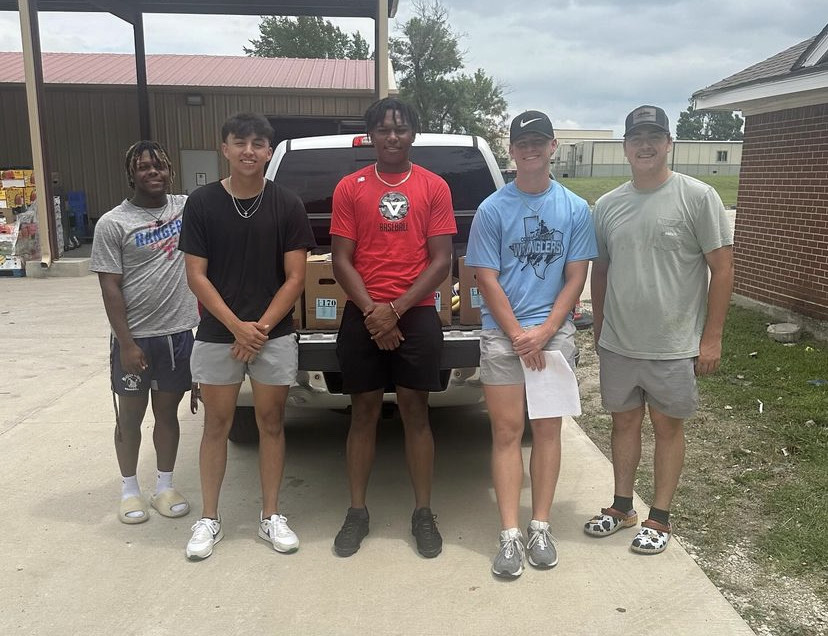
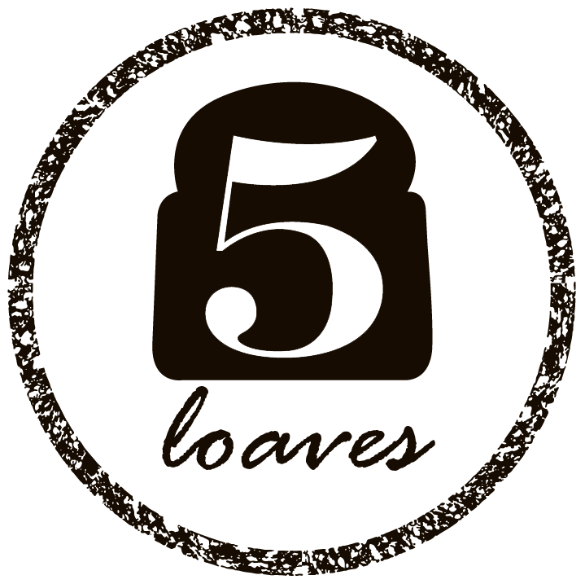

Hungry Athletes is a nonprofit organization dedicated to delivering essential groceries to families experiencing food insecurity. Working alongside Five Loaves Food Pantry, we ensure families have access to nutritious food so children can thrive at home, in school, and in athletics.

Food is a basic human right. Hungry Athletes exists to ensure that no family has to choose between putting food on the table and meeting life's other necessities. We organize volunteers and partner with Five Loaves Food Pantry to deliver groceries directly to families in need throughout the Garland area.
Whether you're seeking assistance, looking to volunteer, or hoping to support our mission, you're helping build a stronger and healthier community.
Serving families throughout Garland, Texas.
Every grocery delivery is made possible through volunteers.
Providing essential groceries with dignity and compassion.
Hungry Athletes proudly partners with Five Loaves Food Pantry to provide essential groceries to local families. Together we can reach more people, reduce food insecurity, and strengthen our community.
Visit Five Loaves
If you need groceries or would like to volunteer, we'd love to hear from you.